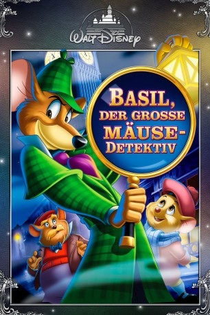
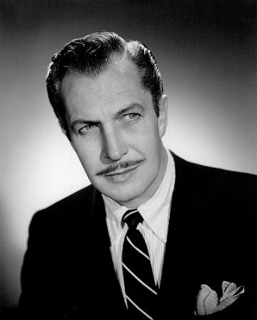

#3335 Basil, der große Mäusedetektiv
Alternativ: The Great Mouse Detective
 
 IMDB-Wertung: 7.2 / 10
IMDB-Wertung: 7.2 / 10  Metascore: 0
Metascore: 0 
London um die Jahrhundertwende: Basils Erzfeind, der verrückte und gefährliche Professor Rattenzahn, treibt dort sein Unwesen. Der durchtriebene Schurke hat den Vater eines kleinen Mäuse-Mädchens entführt. Aber Basil, der gewitzte Sherlock Holmes der Londoner Mäusewelt aus der Baker Street, und sein treuer Gefährte Dr. Wasdenn sowie der liebenswürdige Jagdhund Toby haben längst Rattenzahns Fährte aufgenommen und machen sich auf die abenteuerliche Suche ...
Jahr: 1986
Dauer: 71 Minuten
FSK: 6
Land: USA Studio: Buena Vista PicturesTonspuren: DD2.0 - ,
Untertitel:
Auflösung: 1080p (1920x1080) Größe: 4055 MB
Genre: Sci-Fi, Musik, Abenteuer, Animation/Trick, Familie, Mystery
Regisseur: Ron Clements, Burny Mattinson, David Michener, John Musker
Drehbuch: Carl Binder
Soundtrack:
Darsteller:
-  Vincent Price als Professor Ratigan
 Eve Brenner als The Mouse Queen
Eve Brenner als The Mouse Queen Alan Young als Hiram Flaversham
Alan Young als Hiram Flaversham Basil Rathbone als Sherlock Holmes , archive sound
Basil Rathbone als Sherlock Holmes , archive sound- Shani Wallis als Lady Mouse
 Wayne Allwine als Thug Guard
Wayne Allwine als Thug Guard- Melissa Manchester als Miss Kitty Mouse
 Frank Welker als Toby the Dog / Felicia the Cat , uncredited
Frank Welker als Toby the Dog / Felicia the Cat , uncredited- Barrie Ingham als Basil of Baker Street / Bartholomew
 Val Bettin als Dr. David Q. Dawson / Thug Guard
Val Bettin als Dr. David Q. Dawson / Thug Guard- Susanne Pollatschek als Olivia Flaversham
- Candy Candido als Fidget
- Diana Chesney als Mrs. Judson
- Laurie Main als Dr. Watson , archive sound
- Ellen Fitzhugh als Bar Maid
 Walker Edmiston als Citizen / Thug Guard
Walker Edmiston als Citizen / Thug Guard Tony Anselmo als Thug Guard
Tony Anselmo als Thug Guard
Datei: X:\Kinder Disney HD\1900-1999\Basil, der große Mäusedetektiv (1986, FSK6, 1920x1080).mkv seit 15.03.2016
Festplatte: Kinder-Filme+Trick
 Es gibt insgesamt 16 Filme in der Gruppe 'Kinder Disney HD\1900-1999'
Es gibt insgesamt 16 Filme in der Gruppe 'Kinder Disney HD\1900-1999'